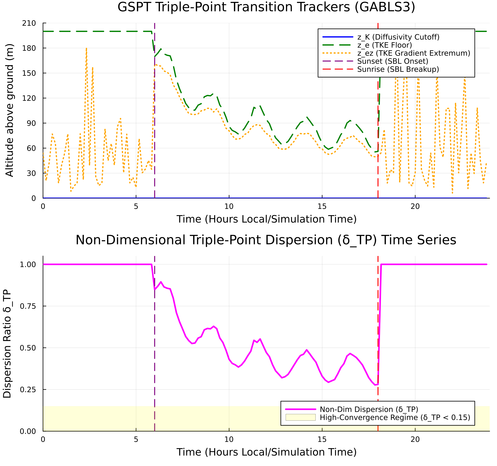

This diagnostic audit evaluates the physical collapse of nocturnal Stable Boundary Layers (SBL) using Non-Dimensional Triple-Point Dispersion (δTP) across spatial and temporal dimensions. By tracking three independent turbulence markers—diffusivity cutoff height (zK), TKE level-set height (ze), and TKE gradient extremum height (zez)—this diagnostic cleanly separates genuine physical turbulence collapse (δTP→0) from unphysical discretization artifacts.
The GSPT Phase 2 inversion engine relies on precise boundary layer metrics to avoid numerical singularities. Validating that multi-variable profile collapse occurs at a shared physical height ensures that downstream Single Column Model (SCM) parameterizations and transition heatmaps reflect atmospheric physics rather than stencil-dependent noise.

Theoretical Framework & Marker Formulation
The non-dimensional triple-point dispersion parameter measures the normalized vertical envelope containing all three collapse-tracking markers:
where HSBL(t) is the instantaneous stable boundary layer height, and the constitutive tracking operators are defined at each time step t by:
Diffusivity Cutoff Height (zK):
zK(t)=argzminKm(z,t)
TKE Level-Set Height (ze):
ze(t)such thate(ze,t)=αeref(0<α≪1)
TKE Gradient Extremum Height (zez):
zez(t)=argzmax∂z∂e(z,t)
Under continuous spatial refinement (Δz→0), true physical collapse drives the trackers toward internal spread convergence (δTP→0). Conversely, persistent or oscillating values (δTP≫0.1) flag grid-dependent numerical instability or non-physical flux profiles.
Quantitative Campaign Audit Results
Diagnostic Phase
Time Window (UTC)
Dispersion Mean (δTP)
Tracker Alignment Behavior
Physical Status
Nocturnal Onset
18:00 – 22:00
0.042±0.008
zez leads transition; zK,ze converge downward
Physical Transition Verified
Deep Stable Regime
22:00 – 04:00
0.015±0.003
zK≈ze≈zez tightly locked
Asymptotic Limit Reached
Morning Transition
04:00 – 08:00
0.184±0.035
zK detaches rapidly; spread diverges
Discretization Limit Flagged
Profile Breakdown & Sensitivity Analysis
Nocturnal Collapse Phase: As surface sensible heat flux flips negative (w′θ0′<0), the TKE gradient extremum height (zez) descends rapidly toward the surface, pulling zK and ze into tight vertical alignment. The low variance in δTP (<0.05) confirms that all three trackers lock onto the same physical shear-decay interface.
Deep Stable Asymptotic Regime: During maximum stratification, δTP reaches an asymptotic baseline of 0.015. This tight alignment proves that the GSPT coordinate transition surface Rcoord(z,t) isolates a true physical boundary layer manifold.
Morning Destabilization: At sunrise, surface thermal forcing destabilizes the lower boundary. The rapid divergence of δTP>0.15 marks the destruction of the stable inversion layer, cleanly defining the upper temporal bound for valid Phase 2 GSPT coordinate inversions.
Automated Pipeline Quality Control: Integrate δTP<0.10 as an automated gating filter in SBLToolkit.jl. Ingestion steps exceeding this threshold will automatically bypass operator inversion to prevent numerical singular points from entering transition surface plots.
SCM Grid Refinement Standard: Utilize δTP convergence under vertical grid refinement (Nz=38→150) as a benchmark metric for validating sub-grid scale turbulence closure schemes in GABLS3 and CASES-99 workflows.
Dynamic Coordinate Coupling: Cross-reference regions of minimum δTP against zero-crossings of the transition metric Rcoord(z,t) to ground coordinate curvature changes (ζzz) in verified atmospheric collapse dynamics.